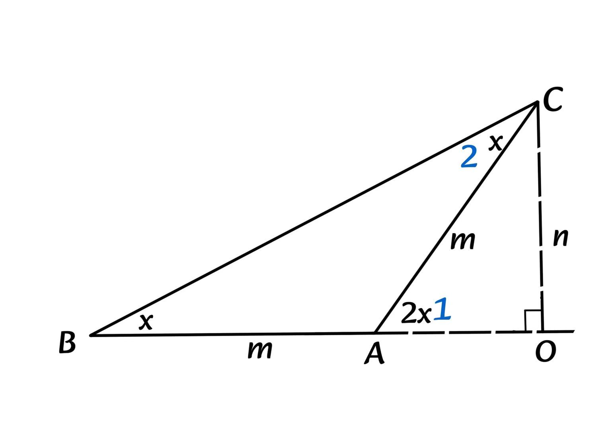

第一届 HGS 奖获奖论文（第二篇）
关于一个没什么用的定理的推导
——基于内部构造法与瞪眼法的巧妙结合
署名：XIV（主要证明） & Dr.叶（辅助验证）
No.3 Middle School Science and Technology Innovation Academy (No.3 AS)
特别鸣谢：三中实验部暑假培训第一期数学卷出题人
正文证明
如图，作 \(\triangle ABC\)，其中 \(\angle B = \angle C = x\)。延长 \(BA\)，过 \(C\) 作 \(CO \perp BA\) 交 \(BA\) 于 \(O\)。设 \(AB\) 长为 \(m\)，\(CO\) 长为 \(n\)。

显然，由瞪眼可知：\(\angle 1 = \angle B + \angle 2 = x + x = 2x\)。因为 \(\angle B = \angle 2 = x\)，所以 \(AB = AC = m\)。
故由瞪眼可知 \(m(AB) = OB - OA = \frac{n}{\tan x} - \frac{n}{\tan 2x}\)。
计算可得 \(n = \frac{m \tan 2x \tan x}{\tan 2x - \tan x}\)，又由图得 \(n = m \sin 2x\)。
代数推导
故：
\(m \sin 2x = \frac{m \tan 2x \tan x}{\tan 2x - \tan x}\)
即：
\(\frac{1}{\sin 2x} = \frac{\tan 2x - \tan x}{\tan 2x \tan x}\)
化简得：
\(\frac{1}{\tan x} - \frac{1}{\tan 2x} = \frac{1}{\sin 2x}\)
Q. E. D.
评审团意见
本证法打破常规，跳出公式证明的死胡同，用纯几何构造解决了代数恒等式，经HGS评委会一致通过，授予第一届HGS奖第二篇席位。